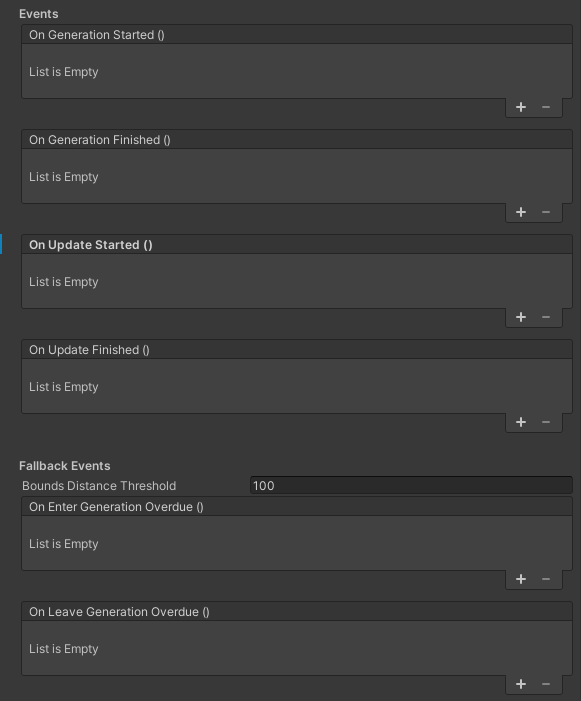

Scene Generation Events
Scene Generation Events are a subcategory of the overarching Quality Events theme.
The Elastic SDK is a whole suite of software that has to process various tasks like service communication and procedural generation. The later includes graph data processing, which ultimately results in terrain being generated and objects being spawned, based on user-defined node graphs. While this whole processing step is done by a single pipeline (per Elastic Scene Generator), the various tasks that have to be completed are not only distributed across multiple frames but some also across different threads or even different hardware pieces.
Each graph node queries a worker in the pipeline that has to complete its work before the pipeline can finish. Some of them run on the CPU, others utilize compute shaders to run on the GPU.
To abstract and simplify this complexity, the Elastic Scene Generator component drives each pipeline run, including certain pre- and post-processing steps, and exposes multiple generation events that map certain states of an individual generation iteration.
Event Overview
The Elastic Scene Generator component has dedicated Events and Fallback Events sections, that provide the user with
a variety of UnityEvents.
These events are meant to be hooks where your program flow can execute different behavior based on the different states
of the generation process.

| Event | Description |
|---|---|
| OnGenerationStarted | The event which is invoked when the initial generation process has started. |
| OnGenerationFinished | The event which is invoked when the initial generation process is finished. |
| OnUpdateStarted | The event which is invoked every time a generation process has started, except the first time. |
| OnUpdateFinished | The event which is invoked every time a generation process has finished, except the first time. |
Generation/Update Started
The OnGenerationStarted event is invoked when the initial generation process of the Elastic Scene Generator has
started.
This means it is only invoked when the pipeline was not running already.
In contrast to that, the OnUpdateStarted event is invoked only when the generator has finished its initial generation iteration and subsequent iterations have started.
Tip
In development builds these events are wrapped in a dedicated Unity Profiler marker: OnUpdateStarted/OnGenerationStarted
Generation/Update Finished
The OnGenerationFinished event is invoked when the initial generation process of the Elastic Scene Generator has
finished.
This means it is only invoked when the pipeline was not running already.
In contrast to that, the OnUpdateFinished event is invoked only when the generator has finished its initial generation iteration already and subsequent iterations have finished after.
Tip
In development builds these events are wrapped in a dedicated Unity Profiler marker: OnUpdateFinished/OnGenerationFinished
Important
In case the generator is stopped and started programmatically via StopGenerator and StartGenerator, the generation started state is reset, which means the OnGenerationStarted and OnGenerationFinished events will be invoked again.
Fallback Event Overview
Fallback events are a special treat in that they are only called if something goes wrong in the generation process.
Since the Elastic SDK works in complex scenarios, i.e. a player moving in a real world vehicle that is projected in a procedurally generated, virtual world, this can have a multitude of reasons. And often more than one at the same time.
Currently, the Elastic Scene Generator provides two fallback events that boil down all the different reasons for poor generation into a single overdue state.
| Fallback Event | Description |
|---|---|
| OnEnterGenerationOverdue | The event which is invoked when the GenerationOrigin, i.e. the Player, got too close to the latest finished generation context's InnerBounds, based on the given BoundsDistanceThreshold. |
| OnLeaveGenerationOverdue | The event which is invoked when the current generation left the overdue state. |
Enter Generation Overdue
The OnEnterGenerationOverdue event is invoked whenever the Player approaches the bounds of the latest finished generation. It can be used to identify and compensate poor content states before they actually happen.
There are several reasons why a generation cannot finish in time and it is likely that there is more than one reason.
For example, a poor internet connection can cause excessive download times for areas where no cached map data exists in
the user's application. This would ultimately stall the generation and the Player would approach the bounds because they
cannot be updated.
Same could happen when the graph is too complex overall, the vehicle drives very fast or the extents of the Elastic
Scene Generator are too small.
Important
In general it is recommended that there is always a fallback solution, e.g. a separate, graph independent scene transition, hooked up to this event.
The BoundsDistanceThreshold is a user-defined value on the Elastic Scene Generator, that can be used to adjust the distance towards the bounds from where the Player will cause the event invokation.
Leave Generation Overdue
As complementary event, OnLeaveGenerationOverdue is invoked when the current generation has finished in time and thus has left the overdue state. Here, "in time" means that any current generation must have finished before the Player gets too close to the InnerBounds of its generation context again.